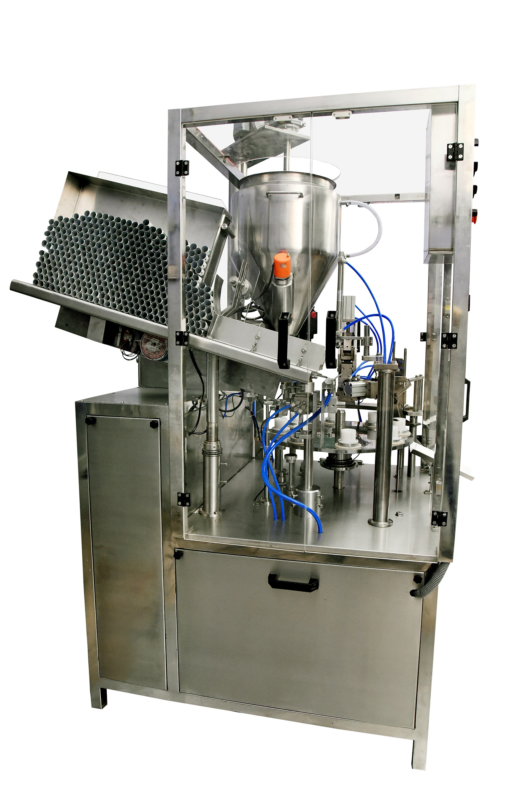
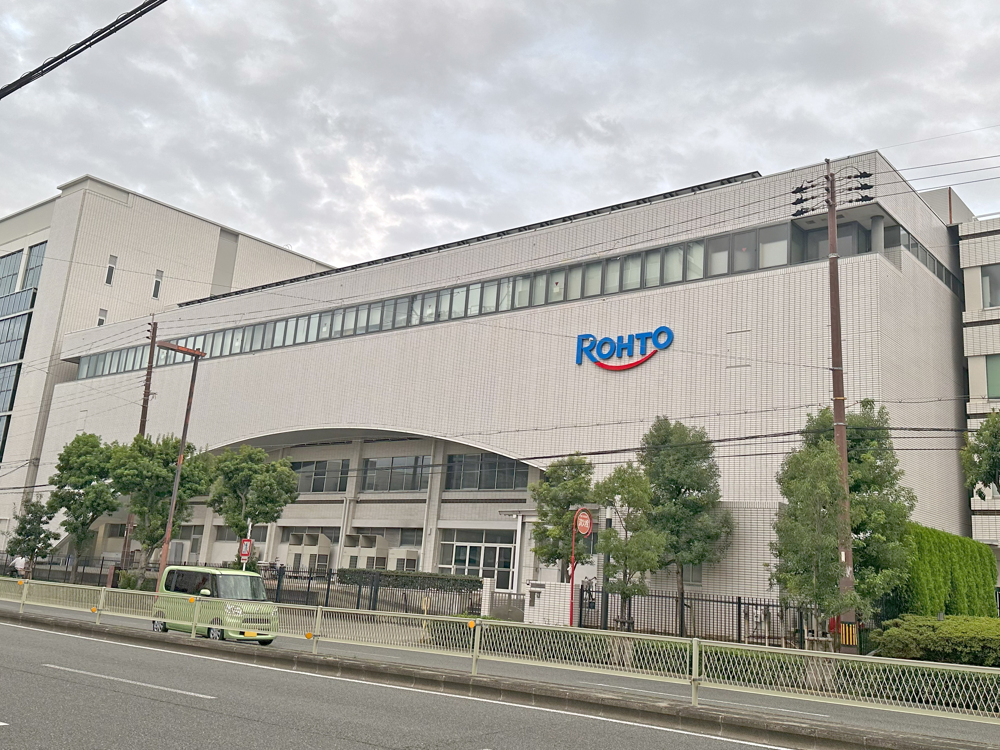

Turnkey lines
Connecting the moving parts of complete production environments.
Automation & process engineer
Pharma equipment, Siemens TIA Portal, GMP and commissioning. I connect process requirements with reliable machine control.

Pharma automation lives in the details: controlled processes, intelligent interfaces and production lines that perform with calm consistency.
Connecting the moving parts of complete production environments.
Automation that keeps dosing, filling and handover precise.
Controlled environments designed around product integrity.

My work sits at the intersection of engineering, communication and the high standards of pharmaceutical manufacturing.
More about meAutomation is more than making a machine move. It is making people, processes and technology move in the same direction.
I am Mihai Starpitu, an Automation & Process Engineer focused on pharmaceutical machinery and industrial control systems.
Currently, I work as a Freelance Consultant at Optima Pharma GmbH through NEO - Professional Solutions GmbH. I support turnkey pharmaceutical equipment projects through process sequence development, harmonized standards, commissioning and close collaboration with Software Development, Qualification and Documentation teams.
My experience bridges process requirements and machine control logic. I work with step chains, pharmaceutical isolators and filling systems in GMP-regulated environments, helping engineering teams turn functional concepts into reliable, understandable machine behavior.
View LinkedIn profileFreelance Automation & Process Engineering Consultant at Optima Pharma GmbH via NEO - Professional Solutions GmbH.
Assigned to Optima Pharma GmbH, supporting pharmaceutical equipment projects with a focus on process engineering and automation-related activities.
Faculty of Automatic Control and Computers
University Politehnica of Bucharest
Faculty of Power Engineering
University Politehnica of Bucharest
Whether you are shaping a new pharma project or need an automation perspective, I would be glad to hear about it.